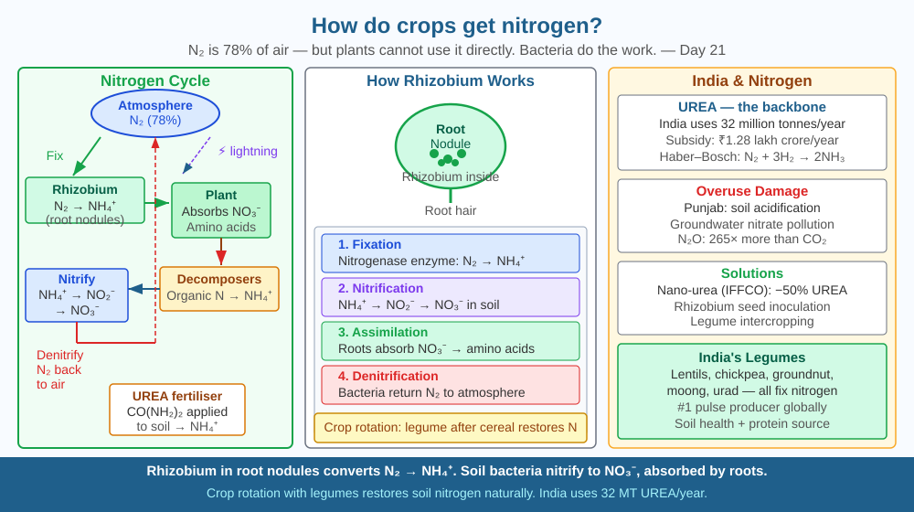

By the end of this lesson, you should be able to explain how crops obtain nitrogen from the soil, describe the role of nitrogen-fixing bacteria, and predict what would happen if those bacteria disappeared.
Every plant cell contains proteins. Proteins are made of amino acids. Amino acids are built from nitrogen. But plants cannot use the nitrogen gas (N₂) that makes up 78 % of our atmosphere — the N≡N triple bond is one of the strongest bonds in chemistry, and plants have no way to break it. So where does all the nitrogen in a wheat or rice plant come from?
Step 1 — Nitrogen fixation. Certain bacteria, especially Rhizobium living in root nodules of legumes (peas, lentils, groundnuts), carry an enzyme called nitrogenase that breaks the N≡N bond. They convert atmospheric N₂ into ammonium (NH₄⁺) — a form roots can absorb. Lightning also fixes a small amount of nitrogen during storms.
Step 2 — Nitrification. Soil bacteria (Nitrosomonas, Nitrobacter) convert ammonium → nitrite (NO₂⁻) → nitrate (NO₃⁻). Roots absorb nitrates most efficiently via active transport.
Step 3 — Assimilation. Inside the plant, nitrates are converted back to ammonium, then used to build amino acids and proteins — the building blocks of every cell, enzyme, and chlorophyll molecule.
Step 4 — Decomposition and denitrification. Dead organic matter is broken down by decomposers → ammonium released. Denitrifying bacteria return some nitrogen to the atmosphere, completing the cycle.
Synthetic nitrogen (UREA). The Haber–Bosch process fixes nitrogen industrially at high temperature and pressure: N₂ + 3H₂ → 2NH₃. UREA fertiliser (CO(NH₂)₂) is derived from ammonia. Excess UREA causes eutrophication (algal blooms) in water bodies when nitrates run off into rivers and lakes.
Crop rotation — alternating nitrogen-hungry cereals (wheat, rice) with legumes (dal, chickpea) — naturally restores soil nitrogen, reducing fertiliser need.
Think of the nitrogen cycle as a bank account where nitrogen is the currency:
Remove the bacteria and the vault stays locked. Crops starve for nitrogen even while surrounded by an atmosphere that is mostly nitrogen gas.
The included SVG shows the nitrogen cycle as a circular diagram with five zones:

India is the world's largest producer and consumer of urea fertiliser, with annual use exceeding 32 million tonnes. The government subsidises UREA heavily — ₹1.28 lakh crore per year — making it the backbone of India's food security. However, overuse in Punjab and Haryana has caused soil acidification, groundwater nitrate pollution, and the release of nitrous oxide (N₂O), a greenhouse gas 265× more potent than CO₂.
Biological nitrogen fixation through legumes, Rhizobium inoculation of seeds, and nano-urea (IFFCO's liquid nano-urea can cut UREA use by 50 %) are emerging alternatives. Crop rotation — the ancient practice of alternating rice or wheat with dal or chickpea — is still one of the most effective and affordable ways to maintain soil fertility without synthetic input.
Root-nodule hunt: Pull a healthy dal (lentil) or chickpea plant from a pot or garden. Look at the roots under a magnifying glass. Tiny pink or cream-coloured nodules are colonies of Rhizobium bacteria. Cut one open — the pink colour is leghaemoglobin, which regulates oxygen supply to the nitrogen-fixing enzyme. No nodules = plant is not fixing nitrogen and relies entirely on soil nitrates.
If you do not have a legume plant, compare two pots of soil: one with legume roots and one without. After two weeks of watering, test the soil with a nitrate test strip (available in aquarium shops). The legume-root soil will show measurably higher nitrate levels.
The nitrogenase enzyme requires an enormous amount of energy — around 16 ATP molecules to fix one N₂ molecule — and it is instantly destroyed by oxygen. Rhizobium inside root nodules is protected from oxygen by leghaemoglobin (a close relative of the haemoglobin in your blood).
Scientists are trying to engineer non-legume crops like wheat and rice to harbour nitrogen-fixing bacteria — a breakthrough that could eliminate the need for synthetic fertiliser and transform global agriculture. Several research groups have already created cereals with modified root cells that allow Rhizobium to survive inside them, though commercial applications remain years away.
Predict: If such engineered wheat became widespread, what would happen to India's ₹1.28 lakh crore annual UREA subsidy bill? What new environmental problems might disappear, and what new risks might appear?
How do most crops obtain the nitrogen they need to grow?
Correct answer: A
Why is understanding the nitrogen cycle mechanism more useful than knowing plants need nitrogen?
Correct answer: A
If nitrogen-fixing bacteria were removed from the soil, what would you predict?
Correct answer: A
A farmer has two identical fields. In Field A she plants only wheat for three years. In Field B she alternates wheat with chickpea every other year. At the end of three years, she applies no fertiliser to either field.
Predict which field will have higher soil nitrogen and higher wheat yield in year four. Use the nitrogen cycle to explain your reasoning step by step — mention at least three named bacteria or processes. Then suggest one measurement (using equipment found in a school lab) that could verify your prediction before the wheat harvest.
The same leghaemoglobin protein that makes root nodules pink is closely related to the haemoglobin in human red blood cells. Both proteins evolved to do the same job: carry oxygen without letting it destroy something nearby (a nitrogen-fixing enzyme in the nodule; iron-containing enzymes in mitochondria). This is one of the clearest examples of evolution reusing the same molecular toolkit in completely different organisms — a bacterium living in a plant root, and a blood cell in a human artery, solving the same oxygen-management problem with the same protein family.
Crops cannot use atmospheric nitrogen directly — bacteria in the soil convert it to nitrates that roots absorb, and without those bacteria, soil nitrogen falls and crops starve even in an atmosphere that is 78 % nitrogen.